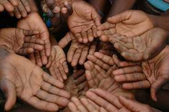

Many organizations give things like food, water, clothing, medical aid, or education to impoverished people. This strategy is very compassionate, but also very short-sighted. Giving short term aid actually harms impoverished peoples. Not only does it risk forming relationships of dependence and feelings of entitlement or victimization, but by supplying free goods or services to a society, the members who are trying to make a living by providing those goods or services for profit are faced with unfair competition and are then unable to keep their enterprise going. As a stunning example of this effect, look to the strategy of many colonial era empires of flooding subservient states with cheap goods to undercut manufacturing, and ensure that colonies remained dependent, permanently supplying cheap raw materials and cash to the ruling state. Even giving education is ineffective, since educating small groups of people does not create a revolution of knowledge, and prevents the people from setting up their own education system that will permanently stand.  Local, grassroots enterprise, a unified and independent populace, is the only way these communities can achieve self-reliance.
To avoid this and encourage the developing world to independently lift themselves out of poverty, we in the industrialized world must allow them to fend for themselves as much as they are able to, and focus on only helping with their existing efforts rather than supplying the end products of these efforts at little or no cost.